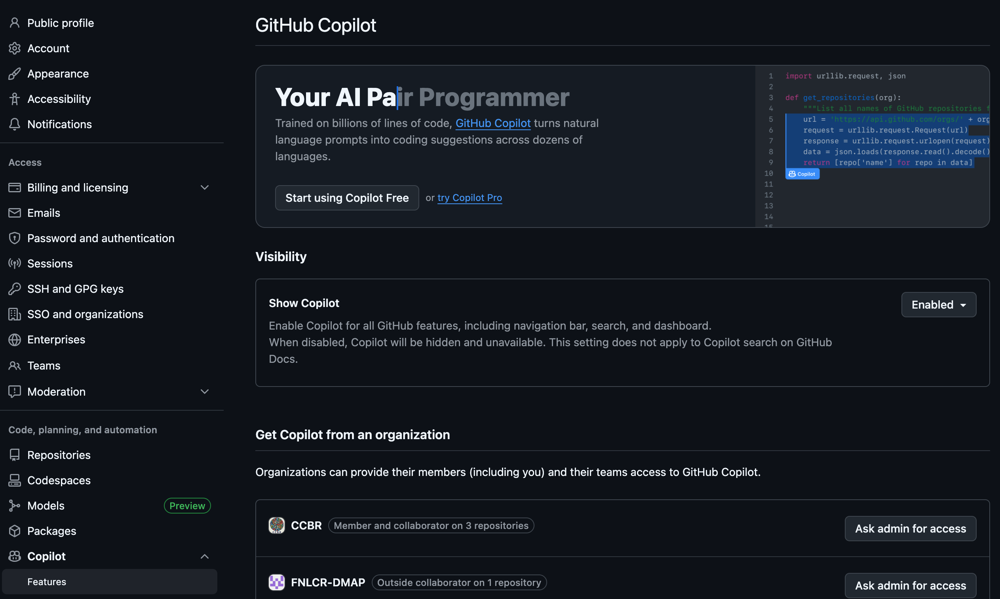
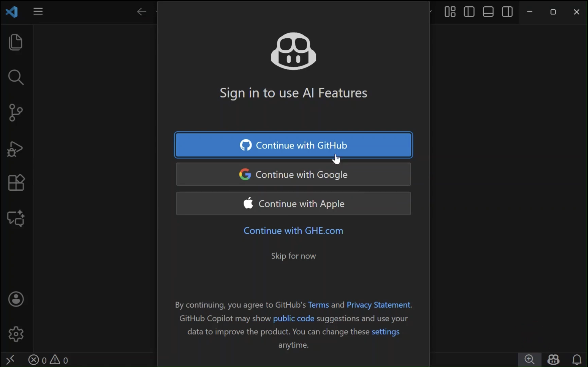
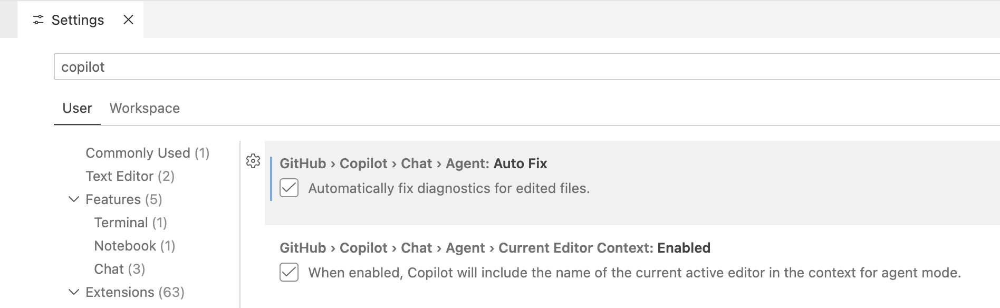
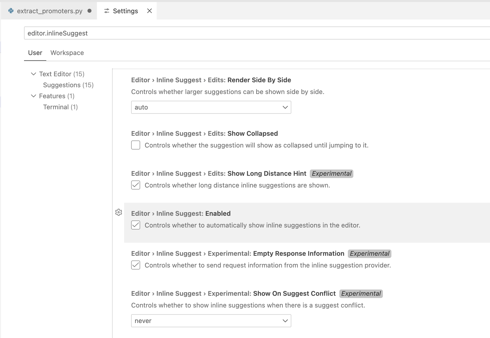
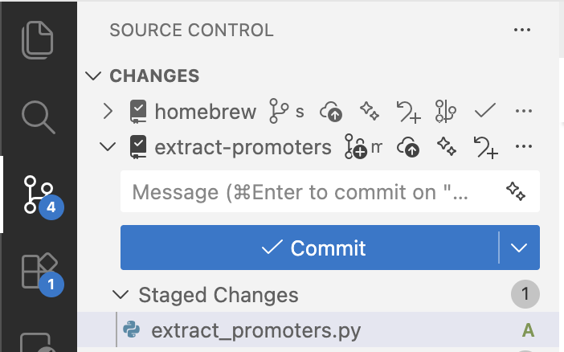
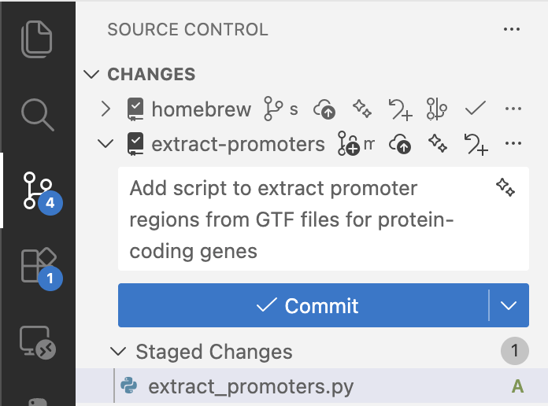

GitHub CoPilot in VS Code
CCBR members can view the recording of this demo:
Why CoPilot?
CoPilot is built to work seamlessly in your IDE. It is a bridge between you, your codebase, and LLMs like ChatGPT, Claude, etc. Copilot makes suggestions based on the context of your entire project, rather than only a single prompt.
With the web interface for ChatGPT, Claude, etc, you would have to upload your code in order for it to have access to the context of your project. Further, you would have to copy & paste suggestions from the browser into your IDE. If you frequently switch between working on multiple projects, or have large projects with hundreds or thousands of lines of code, this can get onerous quickly.
GitHub CoPilot in your IDE removes friction and makes using LLMs for development tasks a breeze!

Setup
Sign up for CoPilot
At this time, we cannot add more users to the NCI Enterprise premium CoPilot license. However, you can still do a lot with the the free version of CoPilot!
Enable Copilot:
https://github.com/settings/copilot

See more: GitHub Docs
Set up CoPilot in VS Code
- Hover over the Copilot icon in the Status Bar and select Use AI Features.

- Sign in to GitHub

- Start using Copilot in VS Code!
The GitHub Copilot Chat extension should now be installed.
VS Code settings
You can customize CoPilot settings in VS Code by going to Settings > Extensions > GitHub Copilot or by using the keyboard shortcut CmdCmd on Mac.

GitHub CoPilot also works well in Positron, an IDE created by Posit based on VS Code.
Demo: a simple python script
Example project: given a GTF file, extract the gene transcription start sites and create a BED file of promoter regions.
Files:
- extract_promoters.py - Example Python script for demonstrating CoPilot
- setup.sh - Download data files for testing the Python script
Open project in new window
Create a new directory for your project and open it with VS Code.

We recommend initializing git and making a commit with the existing code before you start using CoPilot.
pwd
# /path/to/extract-promoters/
git init
git add extract_promoters.py setup.sh
git commit -m 'Initial commit'Automatic inline suggestions
 <vscode://settings/editor.inlineSuggest.enabled>
Example: ask Copilot to write a docstring.
Inline chat
Example: ask Copilot to break out a complicated line of code into a separate function.
CmdCmd
Source Control: git GUI in VS Code
Suggest commit messages


Writing unit tests
Ask Copilot to suggest unit tests
Tips
- Always read and understand the AI suggestion before accepting it
- Write tests to make sure your code works the way you think it does
- Use git and commit your changes often
- Periodically step back and reflect on what you’re trying to accomplish